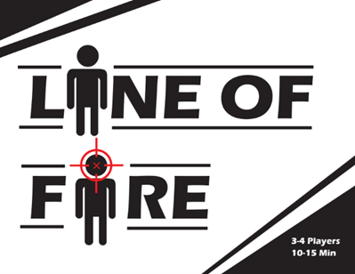

Currently working on: A top-down disco inspired shooter game. Right now it's in the prototyping phase, and this is the first big digital game project that I'm taking on. I'm super excited to see where this project takes me and where I take it.

A card game for 3-4 players all about helping and betraying your way to victory! I was responsible for conceptualization, as well as being the team lead throughout the initial creation of the project. I had a big hand in creating the rules for the game, it's major mechancis, as well as creating a portion of the cards that are in the game. Later on, I designed the rule sheet, as well as worked reworking a lot of cards from our initial playtests to play better
A 1v1 Tarot-inspired card game in which the rules evolve as as the game goes on through players winning Major Arcana cards. I was responsible for the conceptualization of the game, creating the Major Arcana mechanic, as well as designing a handful of the Major Arcana card rules


{kind=link}
{kind=link}